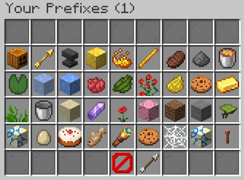
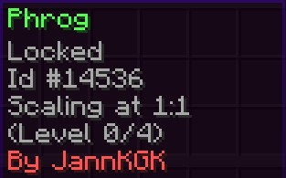
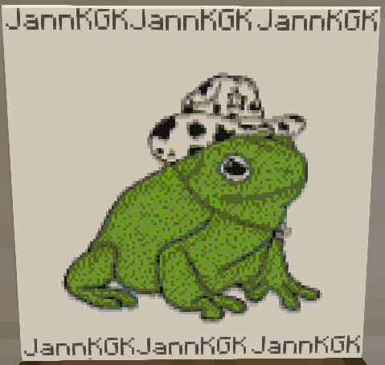
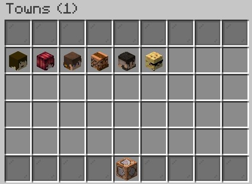

Hello there!
I am a Spigot developer with two years of experience, I have a strong focus on creating plugins that are tailored to the specific needs of individual servers.
while not my focus, I have experience with creating more general-purpose plugins, as well as working with databases.
Prefixes is a plugin that lets players choose from a list of unlocked LuckPerms prefixes to use in front of their username in chat. It also has functionality to generate voucher items that unlock a specific prefix.
Trademarker is a plugin that lets players protect their map art from being copied by other players. It also allows players to watermark their maps with their username.
 
WorldSync is a plugin that lets you synchronize the time and weather of your game world to a real-life location.
This allows for a more realistic and immersive experience in the game.
Towny Ads is a plugin that lets mayors of Towny towns advertise their towns in a GUI. Players can then open the GUI to view the available towns and their descriptions, allowing them to find towns that are looking for new residents.
Jann's flexibility in both creating plugins and implementing unique solutions to ongoing technical challenges has made him an incredible asset to our server
Appleyard